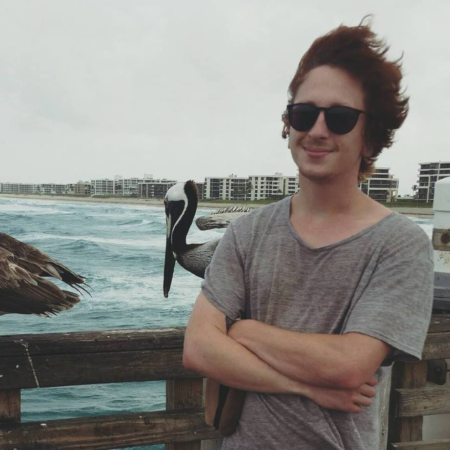

Hi, I’m David
Experience
Where I've Worked
- Elite Signs & Graphics
• Worked with various materials: aluminum, polymetal, coroplast, acrylic, and gator foam.
• Established trusting relationships with outside vendors, designers, and key clients
• Created dimensional layouts in illustrator with cuts and bleeds based on materials
• Incorporate changes recommended by clients or art director into final designs
• Meet with clients or the art director to determine the scope of a project
• Handled multiple projects at once, many with conflicting deadlines
• Deliver clear and concise messages through visual elements.
• Review designs for errors before printing or publishing them
• Designed logos, flyers, and advertisements using Illustrator
• Present design concepts to clients or art director
• Communications with third-party companies
- Freelance Graphic Designer
• Provide a variety of visual aids and graphics for clients to select
• Communicate with clients to ensure visual concepts are within standard
• Developed designs and logos used for business cards, posters, web design, and banners
• Commonly provide hand-drawn illustrations before using Illustrator and Photoshop for creation
• Produce detailed visuals and illustrations while creating designs specific to client requests and desires
• Utilize Adobe Creative Suite, Photoshop and illustrator to deliver high-quality work on tight schedules
• Managing and completing several projects simultaneously.
- Safari Sun
• Provide art files with dimensional information
• Create custom graphic art for multiple brands
• Color Separation for Screen Printing using Photoshop
• Create graphic art based on customers notes or sketch
• Submit samples, renderings, and mock-ups for approval
• Process project requests from sales representatives and customers
• Collaborate with design and marketing team on creative/conceptual ideas
• Create apparel graphics for screen print, DTG, embroidery, and other applications
• Keep up with trends, insights, opportunities, and competition to influence aesthetic
• Implement expert-level knowledge of color theory, concept development, and branding
• Develop the brand image by conceptualizing and executing the seasonal capsule collections